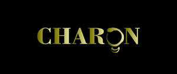

Trade Mark Journal No.2025/009 28 February 2025
UK00004162299 19 February 2025 (3,4,14,18,25,28)

- Class 3
- Perfume; Perfumes; Perfume oils; Perfumery and fragrances; Amber [perfume]; Fragrances; Oils for perfumes and scents; Fragrance sachets; Musk [perfumery]; Cologne; Perfume water; Aromatics for perfumes; Room perfume sprays; Liquid perfumes; Potpourris [fragrances]; Colognes; Scents; Fragrance emitting wicks for room fragrance; Aromatics for fragrances; Perfumery; Perfumes for cardboard; Fragrance refills for non-electric room fragrance dispensers; Cedarwood perfumery; Extracts of perfumes; Body deodorants [perfumery]; Eau de cologne [cologne water]; Extracts of flowers [perfumes]; Flowers (Extracts of -) [perfumes]; Extracts of flowers being perfumes; Perfumes for ceramics; Deodorants for personal use [perfumery]; Ionone [perfumery]; Aftershave lotions; Body fragrances; Perfumeries; Fragrance preparations; Perfume oils for the manufacture of cosmetic preparations; Perfumed potpourris; Vanilla perfumery; Fragrances for automobiles; Household fragrances; Perfumed sachets; Room perfumes in spray form; Fragrance sachets for eye pillows; Natural oils for perfumes; Perfumery products; Aftershave; Cosmetics; Skincare cosmetics; Moisturisers [cosmetics]; Cosmetics and cosmetic preparations; Hair cosmetics; Skin fresheners [cosmetics]; Cosmetics for eye-lashes; Cosmetics for suntanning; Anti-aging moisturizers used as cosmetics; Organic cosmetics; Non-medicated cosmetics; Lip cosmetics; Nail cosmetics; Skin moisturizers used as cosmetics; Natural cosmetics; Cosmetics preparations; Mousses [cosmetics]; Make-up palettes containing cosmetics; Cosmetics in the form of lotions; Tanning gels [cosmetics]; Tanning oils [cosmetics]; Facial creams [cosmetics]; Beauty care cosmetics; Colour cosmetics; Self-tanning preparations [cosmetics]; Eyebrow cosmetics; Tanning preparations [cosmetics]; Decorative cosmetics; Multifunctional cosmetics; Milks [cosmetics]; Eye cosmetics; Body creams [cosmetics]; After-sun oils [cosmetics]; Skin masks [cosmetics]; Cosmetics for eye-brows; Tanning milks [cosmetics]; Functional cosmetics; Suntan oils [cosmetics]; Facial gels [cosmetics]; Skin care cosmetics; Suntan lotion [cosmetics]; Fluid creams [cosmetics]; Non-medicated cosmetics and toiletry preparations; Cosmetics for children; Humectant preparations [cosmetics]; Emollient preparations [cosmetics]; Cosmetics in the form of creams; Powder compacts [cosmetics]; Sun-tanning preparations [cosmetics]; Cosmetic hair lotions; Colour cosmetics for the skin; Suntanning oil [cosmetics]; After-sun milks [cosmetics]; After-sun milk [cosmetics]; Cosmetics for use on the skin; Cosmetic moisturisers; Sunscreens [for cosmetic use]; Cosmetic creams and lotions; Bath powder [cosmetics]; Night creams [cosmetics]; Skin recovery creams [cosmetics]; Cosmetic products in the form of aerosols for skincare; Sun blocking lipsticks [cosmetics]; Cosmetics for the use on the hair; Body gels [cosmetics]; Body and facial creams [cosmetics]; Sunscreen [for cosmetic use]; Lip stains [cosmetics]; Sunscreen creams [for cosmetic use]; Body care cosmetics; Creams (Cosmetic -); Cosmetic creams; Cosmetic soaps; Cosmetics containing keratin; Cosmetics in the form of powders; Cosmetic skin fresheners; Hair care lotions [for cosmetic use]; Dyes (Cosmetic -); Cosmetic dyes; Cosmetics in the form of oils; After-sun lotions [for cosmetic use]; Beauty lotions; Cosmetics containing panthenol; Nail paint [cosmetics]; Cosmetic facial lotions; Facial lotions [cosmetic]; Cosmetic suntan lotions; Skin care lotions [cosmetic]; Colour cosmetics for children; Nail hardeners [cosmetics]; Anti-aging creams [for cosmetic use]; Tissues impregnated with cosmetics; Nail tips [cosmetics]; Cosmetic products for the shower; Nail primer [cosmetics]; Smoothing emulsions [cosmetics]; Anti-ageing creams [for cosmetic use]; Sun protecting creams [cosmetics]; Skin cleansers [cosmetic]; Perfumed powders [for cosmetic use]; Liners [cosmetics] for the eyes; Moisturising skin lotions [cosmetic]; Cosmetic creams for the skin; Skin creams [cosmetic]; Skin creams [for cosmetic use]; Body and facial gels [cosmetics].
- Class 4
- Candles; Candles and wicks for candles for lighting; Tealight candles; Votive candles; Scented candles; Wicks for candles; Candles for use as nightlights; Nightlights [candles]; Candles for lighting; Fragranced candles; Wicks for candles for lighting; Candles and wicks for lighting; Candles in tins; Candle torches; Perfumed candles; Candles (Perfumed -); Soy candles; Christmas lights [candles]; Candles for use in the decoration of cakes; Table candles; Tea light candles; Church candles; Floating candles; Aromatherapy fragrance candles; Beeswax for use in the manufacture of candles; Wax for making candles; Candle wax; Grave candles, non-electric; Christmas tree decorations for illumination [candles]; Bougies in the nature of wax candles; Candles (Christmas tree -); Christmas tree candles; Special occasion candles; Wax lights; Tea lights; Candles containing insect repellent; Musk scented candles; Oils for fragrancing.
- Class 14
- Holiday ornaments [figurines] of precious metal, other than tree ornaments; Ornaments [jewellery]; Trinkets [jewelry]; Trinkets [jewellery]; Items of jewellery; Jewellery items; Ear ornaments in the nature of jewellery; Jewelry boxes; Personal ornaments of precious metal; Charms [jewelry]; Jewelry charms; Charms for jewelry.
- Class 18
- Souvenir bags; Travelling bags [leatherware]; Bags for sports clothing; Travel bags made of plastic materials; Textile shopping bags; Holdalls for sports clothing; Saddlery, whips and apparel for animals.
- Class 25
- Gloves for apparel; Jerseys [clothing]; Clothing; Sportswear; Athletic clothing; Clothing for sports; Sports clothing; Ready-to-wear clothing; Jackets being sports clothing; Knitwear [clothing]; Sports garments; Parts of clothing, footwear and headgear; Men's clothing; Embroidered clothing; Jackets [clothing]; Triathlon clothing; Woolen clothing; Sports clothing [other than golf gloves]; Headbands [clothing]; Headbands for clothing; Leisure clothing; Layettes [clothing]; Clothing layettes; Casual clothing; Clothing for leisure wear; Garments for protecting clothing; Denims [clothing]; Cashmere clothing; Shorts [clothing]; Clothing for cycling; Footwear for sports; Sports footwear; Aprons [clothing]; Golf clothing, other than gloves; Footwear; Wristbands [clothing]; Visors [clothing]; Athletic footwear; Gloves [clothing]; Gloves as clothing; Windproof clothing; Clothing for gymnastics; Leather clothing; Clothing of leather; Leather (Clothing of -); Plush clothing; Playsuits [clothing]; Fishing clothing; Quilted jackets [clothing]; Mufflers [clothing]; Clothing for wear in wrestling games; Outerwear; Clothing for skiing; Athletics footwear; Latex clothing; Knitted clothing; Furs [clothing]; Water-resistant clothing; Silk clothing; Gabardines [clothing]; Clothes for sports; Linen clothing; Shoes for leisurewear.
- Class 28
- Decorations and ornaments for Christmas trees; Christmas tree decorations and ornaments; Ornaments for Christmas trees; Musical Christmas tree ornaments; Festive decorations, party novelties and artificial Christmas trees; Christmas tree ornaments; Decorations for Christmas trees.
William Tulloch
David Ko